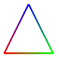
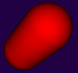
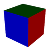

For the rest of the course, we will be working with HTML and JavaScript to do 3D graphics. We will soon turn to working directly with WebGL, the variant of OpenGL that is designed for use in Web Browsers. However, before we do that, we will look at a higher-level API for 3D web graphics: Three.js. You might want to review the Introduction to JavaScript in Section 4 before proceeding. This section shows how to use in three.js many of the 3D graphics concepts that you already know. In the next section, we will sample some of the more advanced things that can be done with three.js.
Three.js is an object-oriented JavaScript library for 3D graphics. It is an open-source project created by a Mr.doob, and it seems to be the most popular JavaScript library for 3D. Three.js uses concepts that you are already familiar with, such as 3D objects, transformations, lights, materials, textures, and cameras. The basic procedure is to build a scene graph out of three.js objects to represent a 3D world, and then to render an image of that world. Animation is done by modifying properties of the scene graph between frames.
The web site for three.js is threejs.org, and it can be downloaded from that site. There is some documentation available, but it is rather incomplete. For full information, you need to study the source code and the examples that are part of the download. There are some very useful tutorial and example websites for three.js, including Jerome Etienne's learningthreejs.com and Lee Stemkoski's Three.js Examples. I have made use of all these resources and am particularly indebted to the latter.
Three.js works with the HTML <canvas> element, the same thing that we used for 2D graphics in Section 5. In many web browsers, in addition to its 2D Graphics API, a canvas also supports drawing in 3D using WebGL, which is about as different as it can be from the 2D API. (WebGL is not available in some browsers that support <canvas>. For example, this is true in Internet Explorer 9 and 10. WebGL will be implemented in Internet Explorer 11.) Three.js can draw to a canvas using either WebGL or the 2D canvas API; however, not all features are supported in both modes and even those that are supported might not look identical in the two modes. We will prefer WebGL, when available, since it can make use of graphics hardware for high-speed rendering.
The core features of three.js are defined in a single large JavaScript file named three.js, which can be found in a build directory in the download. There is also a smaller "minified" version, three.min.js, that contains the same definitions in a format that is not meant to be human-readable. To use three.js on a web page, you need to include one of the two scripts in a <script> element on the page. For example, assuming that three.min.js is in the same folder as the web page, then the script element could be:
<script type="text/javascript" src="three.min.js"></script>
In addition to this core, the three.js download has a directory containing many examples and a variety of support files that are used in the examples. Although I will stick mainly to the core, I will also use a few of the extras and will note their source when I do.
Three of the most basic classes in three.js are THREE.Scene, THREE.Camera, and the two renderer classes THREE.WebGLRenderer and THREE.CanvasRenderer. (All of the classes and constants that we will use are properties of an object named THREE, and their names begin with "THREE.". I will often refer to classes without using this prefix, and it is not usually used in the three.js documentation, but you always have to use it in your code.)
A scene is a holder for all the objects that make up a 3D world, including lights, graphical objects, and possibly cameras. It acts as a root node for the scene graph. A camera is a special kind of object that represents a viewpoint from which an image of a 3D world can be made. It represents a combination of a viewing transformation and a projection. A renderer is an object that creates the image. The renderers that we will use always draw their image to a <canvas>. A three.js program will often keep references to at least one scene, camera, and renderer in global variables:
var scene, camera, renderer;
The scene is the simplest of these. It can be created as an object of type THREE.Scene using a constructor with no parameters:
scene = new THREE.Scene();
The function scene.add(item) can be used to add cameras, lights, and graphical objects to the scene and is probably the only scene function that you will need to call. The function scene.remove(item), which removes an item from the scene, is also occasionally useful.
There are two kinds of camera, one using orthographic projection and one using perspective projection. They are represented by classes THREE.OrthographicCamera and THREE.PerspectiveCamera, which are subclasses of THREE.Camera. The constructors specify the projection, using parameters that are familiar from OpenGL:
camera = new THREE.OrthographicCamera( xmin, xmax, ymin, ymax, near, far );
or
camera = new THREE.PerspectiveCamera( fieldOfViewAngle, aspect, near, far );
The parameters for the orthographic camera specify the x, y, and z limits of the view volume, in eye coordinates—that is, in a coordinate system in which the camera is at (0,0,0) looking in the direction of the negative z-axis, with the y-axis pointing up in the view. The parameters are the same as for the OpenGL function glOrtho(). Recall that near and far give the z-limits in terms of distance from the camera.
The parameters for the perspective camera come from the function gluPerspective() in OpenGL's GLU library. The first parameter determines the vertical extent of the view volume, given as an angle measured in degrees. The aspect is the ratio between the horizontal and vertical extents; it should be set to the width of the image over the height. near and far give the z-limits on the view volume as distances from the camera; both must be positive, with near less than far. (You might want to review the material on projections in Section 8.) Typical code for creating a perspective camera would be:
camera = new THREE.PerspectiveCamera( 60, canvas.width/canvas.height, 0.1, 100 );
where canvas holds a reference to the <canvas> element where the image will be displayed, possibly obtained using document.getElementById(). The near and far values mean that only things between 0.1 and 100 units in front of the camera can be shown in the image. Recall that using an unnecessarily large value for far or an unnecessarily small value for near can interfere with the accuracy of the depth test.
A camera, like other objects, can be added to a scene, but it does not have to be in the scene graph to be used. You might add it to the scene graph if you want it to be a parent or child of another object in the graph. In any case, you will want to set the camera's viewing transformation by positioning it and orienting it in 3D space. I will cover that later when I talk about transformations more generally.
A renderer that renders using WebGL is an instance of the class THREE.WebGLRenderer. Its constructor has one parameter, which is a JavaScript object containing settings that affect the renderer. The settings you are most likely to specify are canvas, which tells the renderer where to draw, and antialias, which asks the renderer to use antialiasing if possible:
renderer = new THREE.WebGLRenderer( {
canvas: theCanvas,
antialias: true
} );
Here, theCanvas would be a reference to the <canvas> element where the renderer will display the images that it produces.
A renderer that uses the 2D canvas API for drawing is an object of type THREE.CanvasRenderer. The constructor has just one useful setting, for setting the canvas. However, I have found that a CanvasRenderer won't work unless its setSize() method is called. The size should be set to the size of the canvas:
renderer = new THREE.CanvasRenderer( { canvas: theCanvas } );
renderer.setSize( theCanvas.width, theCanvas.height );
You might wonder why worry about CanvasRenderer when WebGLRenderer has much better performance and, for most things, higher quality? The reason, of course, is that some browsers that can't use WebGL can still use CanvasRenderer. You can design your web page to use WebGLRenderer if available and CanvasRenderer if not.
After creating the renderer, you might want to set a background color for it to use. The background color is used to clear the canvas before rendering the scene. The default background color is fully transparent, so that the background of the canvas or web page will show through. You can change it using the method renderer.setClearColor(color). The parameter can be a string giving a CSS color value such as "red" or "#BBA030". More commonly, it is given as an integer, expressed as a six-digit hexadecimal number. For example, for a beige background, you could use
renderer.setClearColor( 0xf5f5dc );
But the main thing that you want to do with a renderer is render an image. For that, you always need a scene and a camera. To render an image of a given scene from the point of view of a camera, call
renderer.render( scene, camera );
This is really the central command in a three.js application.
(I should note that most of the examples that I have seen do not provide a canvas to the renderer; instead, they allow the renderer to create it. After the renderer has been created, the canvas can be obtained from the renderer and added to the page. Furthermore, the canvas generally fills the entire browser window. You can consult the examples in the three.js download or on the example web sites to see how to do that.)
Here is a function for initializing three.js that I have used in basic applications. It assumes that renderer, scene, and camera are global variables; that there is a function createWorld() that will build the scene graph; that the web page contains a <canvas> element with id="cnvs"; and that it also contains an element with id="message" for displaying messages to the user. This function would be called after the page has been loaded, such as by using <body onload="init()">:
function init() {
try {
var theCanvas = document.getElementById("cnvs");
if (!theCanvas || !theCanvas.getContext) {
document.getElementById("message").innerHTML =
"Sorry, can't use canvas graphics on this page.";
return;
}
try {
if (window.WebGLRenderingContext) {
renderer = new THREE.WebGLRenderer( {
canvas: theCanvas,
antialias: true
} );
}
}
catch (e) {
}
if (!renderer) {
// The attempt to create a WebGLRenderer failed. Use a
// CanvasRenderer instead.
renderer = new THREE.CanvasRenderer( { canvas: theCanvas } );
renderer.setSize(theCanvas.width,theCanvas.height);
document.getElementById("message").innerHTML =
"WebGL not available; falling back to CanvasRenderer.";
}
// renderer.setClearColor(0x220044); // Uncomment for a dark purple background.
scene = new THREE.Scene();
camera = new THREE.PerspectiveCamera(60,
theCanvas.width/theCanvas.height, 0.1, 100);
camera.position.z = 20; // Moves camera from origin to (20,0,0);
createWorld(); // This function needs to be defined to create the scene graph!
renderer.render(scene,camera);
// For an animated scene, the animation can be started here.
}
catch (e) {
document.getElementById("message").innerHTML =
"Sorry, an error occurred: " + e;
}
}
The base class in three.js for representing graphical objects is THREE.Object3D. An Object3D represents a general node in a scene graph. Classes that represent lights, cameras, and visible graphical objects are subclasses of Object3D.
As a node in a three.js scene graph, an object of type Object3D can have child nodes. If node is of type Object3D, then the function node.add(child) can be used to add a child node, and node.remove(child) will remove an existing child. The child nodes of node are stored in a JavaScript array node.children. The object node also has a property node.parent which contains a reference to the parent of node in the scene graph. (The scene graph in three.js is in fact a tree rather than a general directed acyclic graph.) The children and parent properties can be used to traverse the scene graph. The class THREE.Scene is a subclass of THREE.Object3D. An object that is added directly to the scene has the scene as its parent.
Every node in a scene graph can have an associated transformation which represents the modeling transformation that is applied to that node and to its children. An object node of type Object3D has several properties that represent the associated transformation. Those properties represent the scale, rotation, and position of node in object coordinates. That is, they represent the scaling, rotation, and translation that are applied to the node to place it in the modeling coordinate system of its parent. The three transformation properties are objects of type THREE.Vector3.
A Vector3 is simply a list of three numbers, and can be created with the constructor new THREE.Vector3(x,y,z). The constructor new Vector3() creates the vector (0,0,0). An object vec of type Vector3 has properties vec.x, vec.y, and vec.z giving the three coordinates of the vector, and it has a function vec.set(x,y,z) that can be used to set all three properties simultaneously. The Vector3 class has a large number of methods that can be used to do vector math, including dot products and cross products. We will need the function vec.nomalize(), which divides a vector by its length, transforming it into a vector of length one, and returns a reference to vec.
The position of an Object3D node in object coordinates is represented by the property node.position, of type Vector3. You can change the position—and thus the translation transformation that will be applied to the node—using node.position.set(x,y,z) or by assigning values to the individual coordinate properties node.position.x, node.position.y, and node.position.z. Alternatively, you can call node.translateX(dx), node.translateY(dy), or node.translateZ(dz) to move the object by a specified amount in the direction of an axis.
There is also a function node.translateOnAxis(axis,amount), where axis is a Vector3 and amount is a number giving the distance to translate the object. The object is moved in the direction of the vector, axis. The vector must be normalized; that is, it must have length 1. For example, to translate node by 5 units in the direction of the vector (1,1,1), you could say
node.translateOnAxis( new THREE.Vector3(1,1,1).normalize(), 5 );
Similarly, the scaling of an Object3D node is given by the property node.scale, which is another Vector3. The three components of the vector give the scaling factor in the x, y, and z directions and are by default equal to one. To change the scale, you can call node.scale.set(sx,sy,sz) or you can set the individual components of the vector.
Rotation is just a little more complicated. The rotation of an Object3D node is also given as a Vector3, node.rotation. The three components of this vector give the rotation of the object about the x-axis, about the y-axis, and about the z-axis, respectively. You can set the components of the vector directly, or you can use the functions node.rotateX(angle), node.rotateY(angle), and node.rotateZ(angle) to change the rotation amounts. Note that angles are measured in radians. There is also a function node.rotateOnAxis(axis,angle), where axis is a Vector3. This function rotates the object through the angle angle about the vector (that is, about the line between the origin and the point axis). Again, axis must be a normalized vector.
Now, there is some subtlety here about the order in which transformations are applied and when they are applied. Directly changing the components of the vectors node.postion, node.scale, and node.rotation does not have an immediate effect. Instead, the values are used the next time the scene is rendered, and the transformations are applied to the object in the order: scale, rotate-z, rotate-y, rotate-x, translate. The order in which the values are set is immaterial. On the other hand, functions such as node.rotateX and node.translateOnAxis are applied immediately. They take into account the current settings of position, scale, and rotate, and they modify those settings to achieve the specified transformation. When several such transformations are applied to an object, they affect the object in the reverse order in which they occur in the code.
(Admittedly, this is confusing, and I'm not even telling you the whole story!)
Three.js implements several types of 3D objects. In this section, we consider only lines and mesh objects, represented by the classes THREE.Line and THREE.Mesh, which are subclasses of THREE.Object3D. To create a line or a mesh, you need two things: a geometry and a material. Each of these is represented by additional three.js classes.
An object of type THREE.Geometry contains an array of vertices and an array of faces, stored as properties named vertices and faces. It can also contain an array of colors for the vertices. The constructor takes no parameters and creates a geometry object in which both arrays are empty. For any useful geometry, vertices must be added to the vertex array. Each vertex is an object of type THREE.Vector3. For a mesh, it is also necessary to add faces to the face array. We will return the question of faces in the next section. In this section, we will only use some predefined mesh geometries.
An object of type THREE.Line can represent either a line strip or a set of disconnected line segments, what would be called GL_LINE_STRIP or GL_LINES in OpenGL. Unfortunately, there is no option corresponding to GL_LINE_LOOP. For a triangle, we would need a list of four vertices to be connected into a line strip, and these must be added to the vertex array of the line's geometry object. For example:
var lineGeom = new Geometry(); lineGeom.vertices.push( new THREE.Vector3(-2,-2,0) ); lineGeom.vertices.push( new THREE.Vector3(2,-2,0) ); lineGeom.vertices.push( new THREE.Vector3(0,2,0) ); lineGeom.vertices.push( new THREE.Vector3(-2,-2,0) );
Recall that for a JavaScript array, the push method can be used to add an item onto the end of the array. Alternatively, we could create a new array containing the vertices and assign it to the property lineGeom.vertices:
lineGeom.vertices = [
new THREE.Vector3(-2,-2,0),
new THREE.Vector3(2,-2,0),
new THREE.Vector3(0,2,0),
new THREE.Vector3(-2,-2,0)
];
We will also need a material. For lines, the material can be represented by an object of type THREE.LineBasicMaterial. The constructor for this class takes as its parameter a JavaScript object that can specify several properties of the material, including a color and linewidth. For example:
var lineMat = new THREE.LineBasicMaterial( {
color: 0xffff00, // yellow
linewidth: 2 // 2 pixels
} );
If the color is omitted, a default value of white is used. The default for linewidth is 1. The parameter can be omitted entirely, to use all the defaults. Furthermore, the color and linewidth can be set later by assigning values to properties of the material object:
var lineMat = new THREE.LineBasicMaterial(); lineMat.color = new THREE.Color(0xffff00); lineMat.linewidth = 2;
With the geometry and material in hand, we can create a Line object. The constructor takes the geometry and material as parameters, along with one of the constants THREE.LineStrip or THREE.LinePieces to indicate whether a line strip or disconnected line segments should be drawn:
var line = new THREE.Line( lineGeom, lineMat, THREE.LineStrip );
If the third parameter is omitted, it defaults to THREE.LineStrip. If the second parameter is omitted, it defaults to a LineBasicMaterial with a random color. All of this is typical of the flexibility of JavaScript.
 We consider one more option: using a different color for each vertex. To do this, you need to add vertex colors to the Geometry object. The array of vertex colors is stored in the colors property of the geometry. Furthermore, you need to set the vertexColors property of the LineBasicMaterial to true to indicate that the vertex colors should be used instead of the material colors. Let's make a triangle with a red, a blue, and a green vertex—and add the triangle to a scene so that we can see it on the screen:
var lineGeom = new THREE.Geometry();
lineGeom.vertices.push( new THREE.Vector3(-2,-2,0) );
lineGeom.vertices.push( new THREE.Vector3(2,-2,0) );
lineGeom.vertices.push( new THREE.Vector3(0,2,0) );
lineGeom.vertices.push( new THREE.Vector3(-2,-2,0) );
lineGeom.colors.push( new THREE.Color(0xff0000) );
lineGeom.colors.push( new THREE.Color(0x00ff00) );
lineGeom.colors.push( new THREE.Color(0x0000ff) );
lineGeom.colors.push( new THREE.Color(0xff0000) );
var lineMat = new THREE.LineBasicMaterial({
linewidth: 3,
vertexColors: true
});
var triangle = new THREE.Line( lineGeom, lineMat );
scene.add(triangle); // scene is of type THREE.Scene
The "Basic" in LineBasicMaterial indicates that this material uses basic colors that do not require lighting to be visible and are not affected by lighting. This is generally what you want for lines.
Mesh objects work similarly to lines: You need a geometry and a material before you can create a mesh. Three.js comes with classes to represent common mesh geometries, such as a sphere, a cylinder, and a torus. For these built-in classes, you need only call a constructor. For example, the class THREE.CylinderGeometry represents the geometry for a cylinder, and its constructor takes the form
new THREE.CylinderGeometry(radiusTop, radiusBottom, height,
radiusSegments, heightSegments, openEnded)
The cylinder has the y-axis as its axis and extends from −height/2 to height/2 along that axis. The radius of its circular top is radiusTop and of its bottom is radiusBottom. The two radii don't have to be the same; when the are different, you get a truncated cone rather than a cylinder as such. Use a value of zero for radiusTop to get an actual cone. The parameters radiusSegments and heightSegments give the number of subdivisions around the circumference of the cylinder and along its length respectively—what are called slices and stacks in GLUT. The last parameter, openEnded, is a boolean value that indicates whether the top and bottom of the cylinder are to be drawn; use the value true to get an open-ended tube. All of the parameters are optional, but it's probably best to include at least the first three since the default size is rather large.
Other standard mesh geometries are similar. Here are constructors for cube, sphere, torus, and icosahedron, showing all parameters. There are also a tetrahedron and an octahedron, similar to the icosahedron, but, surprisingly, no dodecahedron (perhaps because they didn't want to deal with the pentagonal faces).
new THREE.CubeGeometry(width, height, depth,
widthSegments, heightSegments, depthSegments)
new THREE.PlaneGeometry(width, height, widthSegments, heightSegments)
new THREE.SphereGeometry(radius, widthSegments, heightSegments,
phiStart, phiLength, thetaStart, thetaLength)
new THREE.TorusGeometry(radius, tube, radialSegments, tubularSegments, arc)
new THREE.IcosahedronGeometry(radius, subdivisions)
The class CubeGeometry represents the geometry of a rectangular box centered at the origin. Its constructor has three parameters to give the size of the box in each direction; these are not optional. The last three parameters are optional. They give the number of subdivisions in each direction, with a default of 1; values greater than one will cause the faces of the box to be subdivided into smaller rectangles.
The class PlaneGeometry represents the geometry of a rectangle lying in the xy-plane, centered at the origin. Its parameters are similar to those for a cube.
For SphereGeometry, all parameters are optional. The constructor creates a sphere centered at the origin, with axis along the y-axis. The first parameter, which gives the radius of the sphere, has a default of 50 (which is much too big!). The next two parameters give the numbers of slices and stacks, with default values that are too small. The last four parameters allow you to make a piece of a sphere; the default values give a complete sphere. The last four parameters are angles measured in radians. phiStart and phiLength are measured in angles around the equator and give the extent in longitude of the spherical shell that is generated. For example,
new THREE.SphereGeometry( 5, 32, 16, 0, Math.PI)
creates the geometry for the "western hemisphere" of a sphere. The last two parameters are angles measured along a line of latitude from the north pole of the sphere to the south pole. For example, to get the sphere's "northern hemisphere":
new THREE.SphereGeometry( 5, 32, 16, 0, 2*Math.PI, 0, Math.PI/2 )
For TorusGeometry, the constructor creates a torus lying in the xy-plane, centered at the origin, with the z-axis passing through its hole. The parameter radius is the distance from the center of the torus to the center of the torus's tube, while tube is the radius of the tube. The next two parameters give the number of subdivisions in each direction. The last parameter, arc allows you to make just part of a torus. It is an angle between 0 and 2*Math.PI, measured along the circle at the center of the tube.
Finally, for Icosahedron, the second constructor parameter, subdivisions allows you to create the objects called "icospheres" in Blender. The default value, 1, gives an actual icosahedron. Larger values give an approximation for a sphere that is obtained by subdividing the faces of the icosahedron. The value should be a small integer; anything larger than 5 or 6 will have an unreasonably large number of faces.
To create a mesh object, you need a material as well as a geometry. There are three kinds of material suitable for mesh objects: THREE.MeshBasicMaterial, THREE.MeshLambertMaterial, and THREE.MeshPhongMaterial. The first represents a color that is not affected by lighting; it looks the same whether or not there are lights in the scene. The other two represent materials that need to be lit to be seen; the difference is that MeshPhongMaterial has a specular color but MeshLambertMaterial does not. Both can have diffuse, ambient, and emissive colors. For all three material classes, the constructor has one parameter which is a JavaScript object that specifies values for properties of the material object. For example:
var mat = new THREE.MeshPhongMaterial( {
color: 0xbbbb00, // reflectivity for diffuse light
ambient: 0xbbbb00, // reflectivity for ambient light
emissive: 0, // emissive color; this is the default (black)
specular: 0x505050, // reflectivity for specular light
shininess: 50 // controls size of specular highlights
} );
This example shows the five color parameters for a Phong material. A Lambert material lacks specular and shininess, and a basic mesh material has only color.
There are a few other material properties that you might need to set. These apply to all three kinds of mesh material:
wireframe — a boolean value that indicates whether the mesh
should be drawn as a wireframe model, showing only the outlines of its faces. The
default is false. A true value works best with MeshBasicMaterial.wireframeLinewidth — the width of the lines used to draw the
wireframe, in pixels. The default is 1.visible — a boolean value that controls whether the material is
drawn or not, with a default of true.side — has value THREE.FrontSide, THREE.BackSide,
or THREE.DoubleSide, with the default being THREE.FrontSide. This determines
whether a face is drawn or not. With the default value, THREE.FrontSide, a face
is drawn only if it is being viewed from the front. THREE.DoubleSide will draw
it whether it is viewed from the front or from the back, and THREE.BackSide only
if it is viewed from the back. For closed objects, such as a cube or a complete sphere,
the default value makes sense, at least as long as the viewer is outside of the object.
For a plane, an open tube, or a partial sphere, the value should be set to
THREE.DoubleSide. Otherwise, parts of the object that should be in view won't
be drawn.shading — has value THREE.SmoothShading or THREE.FlatShading,
with the default being THREE.SmoothShading. When making a Lambert or Phong
material for an object that is supposed to look "faceted," with flat sides, it is
important to set this property to THREE.FlatShading. That would be true, for
example, for a cube or for a cylinder with a small number of sides.As an example, let's make a shiny, blue-green, open, five-sided tube with flat sides:
var mat = new THREE.MeshPhongMaterial( {
color: 0x0088aa,
ambient: 0x0088aa,
specular: 0x003344,
shininess: 100,
shading: THREE.FlatShading, // for flat-looking sides
side: THREE.DoubleSide // for drawing the inside of the tube
} );
var geom = new THREE.CylinderGeometry(3,3,10,5,1,true);
var obj = new THREE.Mesh(geom,mat);
scene.add(obj);
 I should note that you don't always need to make new materials and geometries to make new objects. You can reuse the same materials and geometries in different objects. As an example, let's make a non-shiny red object consisting of a cylinder with a hemisphere on each end. We can use the same material for all three pieces of the object, and we can use the same geometry for both hemispheres. Note that the hemispheres are parented to the cylinder so that we can treat the three pieces as a single, hierarchical object:
var hemisphereGeom = new THREE.SphereGeometry( 5, 32, 16,
0, 2*Math.PI, 0, Math.PI/2 );
var tubeGeom = new THREE.CylinderGeometry( 5, 5, 8, 32, 5, true );
var redMat = new THREE.MeshLambertMaterial( {
color: "red", // CSS color names can be used!
} );
var top = new THREE.Mesh( hemisphereGeom, redMat );
var bottom = new THREE.Mesh( hemisphereGeom, redMat );
var pill = new THREE.Mesh( tubeGeom, redMat );
top.position.y = 4; // move to top of cylinder
bottom.rotation.x = Math.PI; // rotate so it's facing down
bottom.position.y = -4; // move to bottom of cylinder
pill.add(top);
pill.add(bottom);
scene.add(pill);
 I want to mention one more option for mesh materials: the ability to apply a different material to each face. To do that, use the material class THREE.MeshFaceMaterial. The constructor takes an array of materials. The length of the array should equal the number of faces of the mesh to which the material is applied. As an example, we can make a cube with a different color on each of its six faces:
var cubeGeom = new THREE.CubeGeometry(10,10,10);
var cubeMaterial = new THREE.MeshFaceMaterial( [
new THREE.MeshPhongMaterial( { color: "red" } ), // +x face
new THREE.MeshPhongMaterial( { color: "cyan" } ), // -x face
new THREE.MeshPhongMaterial( { color: "green" } ), // +y face
new THREE.MeshPhongMaterial( { color: "magenta" } ), // -y face
new THREE.MeshPhongMaterial( { color: "blue" } ), // +z face
new THREE.MeshPhongMaterial( { color: "yellow" } ) // -z face
] );
var cube = new THREE.Mesh( cubeGeom, cubeMaterial );
Compared to objects and materials, lights are easy! Three.js has several classes to represent lights. They are subclasses of THREE.Object3D, so a light can be added directly to a scene or as a child of anther object in the scene graph. And lights can be rotated and translated like other objects. (I don't believe that scaling a light has any effect.)
The class THREE.DirectionalLight represents light that shines in parallel rays from a given direction, like the light from the sun. The position property of a directional light gives the direction from which the light shines. (This is the same position Vector3 that ordinarily represents the location of an object.) Note that the direction of the light is from the position towards the origin. The default position is the vector (0,1,0), which gives a light shining down the y-axis. The constructor for this class has two parameters:
new THREE.DirectionalLight( color, intensity )
where color specifies the color of the light, given as a hexadecimal integer or a CSS color string. Lights do not have separate diffuse and specular colors, as they do in OpenGL. The intensity is a non-negative number that controls the brightness of the light, with larger values making the light brighter. A light with intensity zero gives no light at all. The parameters are optional. The default for color is white (0xffffff) and for intensity is 1.
The class THREE.PointLight represents a light that shines in all directions from a point. The position of the point is given by the light's position property. The constructor has three optional parameters:
new THREE.PointLight( color, intensity, cutoff )
The first two parameters are the same as for a directional light, with the same defaults. The cutoff is a non-negative number. If the value is zero—which is the default—then the illumination from the light extends to infinity, and intensity does not decrease with distance. While this is not physically realistic, it generally works well in practice. If cutoff is greater than zero, then the intensity falls from a maximum right at the light down to an intensity of zero at a distance of cutoff from the light. The light has no effect on objects that are at a distance greater than cutoff from the position of the light.
An object of type THREE.SpotLight is similar to a point light, but instead of shining in all directions, it only produces a cone of light. The constructor adds two parameters to those for a point light:
new THREE.SpotLight( color, intensity, cutoff, coneAngle, exponent )
The coneAngle is a number between 0 and Math.PI/2 that determines the size of the cone of light. It is the angle between the axis of the cone and the side of the cone. The default value is Math.PI/3. The exponent is a non-negative number that determines how fast the intensity of the light decreases as you move from the axis of the cone toward the side. The default value, 10, gives rather rapid falloff. An exponent of zero gives no falloff at all.
Finally, I mention THREE.AmbientLight. This class exists to add ambient light to a scene. An ambient light has only a color:
new THREE.AmbientLight( color )
and adding an ambient light object to a scene adds ambient light of the specified color to the scene. Any transformation applied to an ambient light has no effect, since ambient light doesn't have a source or direction. The color components of an ambient light should be rather small to avoid washing out colors of objects in the scene.
For example, suppose that we would like a yellowish point light at (10,30,15) whose illumination falls off with distance from that point, out to a distance of 100 units. We also want to add a bit of yellow ambient light to the scene:
var light = new THREE.PointLight( 0xffffcc, 1, 100 ); light.position.set( 10, 30, 15 ); scene.add(light); scene.add( new THREE.AmbientLight(0x111100) );
Or suppose that we have a camera on the positive z-axis, looking towards the origin, and we would like a light that shines in the same direction that the camera is looking. We can use a directional light whose position is on the positive z-axis:
var light = new THREE.DirectionalLight(); // default white light light.position.set( 0, 0, 1 ); scene.add(light);
Now, suppose that we want to be able to move the camera around, and we want a "viewpoint" light that always shines in the direction the camera is facing. One way to do that is to add both the camera and the light to an empty object. Then transforming that object will transform the camera and the light together. A camera's default view is in the direction of the negative z-axis, so we still want a light that shines in that direction (in object coordinates):
cameraAndLight = new THREE.Object3D(); // global variable var light = new THREE.DirectionalLight(); light.position.set( 0, 0, 1 ); cameraAndLight.add( camera ); // camera is also global cameraAndLight.add( light ); scene.add( cameraAndLight );
For an example of a very simple three.js scene, see simple-cube-threejs.html, which shows a cube with six different colored faces. The user can rotate the cube using the arrow keys.
Applying image textures to objects is not difficult in three.js. A texture is represented by an object of type THREE.Texture. An image texture can be loaded from a relative URL that points to an image file on the same web server as the web page on which the texture is used. (Because of security restrictions on JavaScript, images from another server can be used only if that server is configured to allow such access. Furthermore, some web browsers won't allow JavaScript to load an image from the local filesystem, even with a relative URL, and image textures won't work in those browsers for web pages loaded from a file.)
Image textures are usually created by using the loadTexture function from the class THREE.ImageUtils. The function takes a URL as parameter and returns a Texture object:
var texture = THREE.ImageUtils.loadTexture( imageURL );
A texture in three.js is considered to be part of a material. To apply a texture to a mesh, just assign the Texture object to the map property of the mesh material that is used on the mesh:
material.map = texture;
In general, the material color will be white, since the material color will be multiplied by colors from the texture. A non-white material color will add a "tint" to the texture colors. Texture coordinates are part of the mesh geometry. The standard mesh geometries such as THREE.SphereGeometry come with texture coordinates already defined.
That's the basic idea—create a texture object from an image URL and assign it to the map property of a material—but of course there are complications. First of all, image loading is "asynchronous." That is, calling THREE.ImageUtils.loadTexture only starts the process of loading the image, and the process can complete sometime after the function returns. Using a texture on an object before the image has finished loading does not cause an error, but the scene will be rendered as if the image were completely black. Once the image has been loaded, the scene has to be rendered again to show the image texture. If an animation is running, this will happen automatically; the image will appear in the first frame after it has finished loading. But if there is no animation, you need a way to render the scene once the image has loaded. In fact, the loadTexture function has several optional parameters:
THREE.ImageUtils.loadTexture( imageURL, mapping, onLoad, onError );
The mapping parameter tells how the texture is applied; for basic image textures, pass the default value THREE.UVMapping() or pass undefined as the parameter to use this default. The onLoad and onError parameters are callback functions. The onLoad function, if defined, will be called once the image has been successfully loaded. The onError function will be called if the attempt to load the image fails. For example, if there is a function render() that renders the scene, then render itself could be used as the onLoad function. For example:
var texture = THREE.ImageUtils.loadTexture( "brick.png", undefined, render );
Another possible use of onLoad would be to delay assigning the texture to a material until the image has finished loading.
A Texture has a number of properties that can be set, including properties to set the minification and magnification filters for the texture and a property to control the generation of mipmaps, which is done automatically by default. The properties that you are most likely to want to change are the wrap mode for texture coordinates outside the range 0 to 1 and the texture transformation.
For a Texture object tex, the properties tex.wrapS and tex.wrapT control how s and t texture coordinates outside the range 0 to 1 are treated. The default, as in OpenGL, is "clamp to edge." You will most likely want to make the texture repeat in both directions by setting the property values to THREE.RepeatWrapping:
tex.wrapS = THREE.RepeatWrapping; tex.wrapT = THREE.RepeatWrapping;
RepeatWrapping works best with "seamless" textures, where the top edge of the image matches up with the bottom edge and the left edge with the right. Three.js also offers an interesting variation called mirrored repetition in which every other copy of the repeated image is flipped. This eliminates the seam between copies of the image. For mirrored repetition, use the property value THREE.MirroredRepeatWrapping:
tex.wrapS = THREE.MirroredRepeatWrapping; tex.wrapT = THREE.MirroredRepeatWrapping;
The texture properties repeat and offset control the scaling and the translation texture transformations that are applied to the texture. (As in Blender, there is no texture rotation.) The values of these properties are of type THREE.Vector2, so that each property has an x and a y component. For a Texture, tex, the two components of tex.offset give the texture translation in the horizontal and vertical directions. To offset the texture by 0.5 horizontally, you can say either
tex.offset.x = 0.5;
or
tex.offset.set( 0.5, 0 );
Remember that a positive horizontal offset will move the texture to the right on the objects, because the offset is applied to the texture coordinates not to the texture image itself.
The components of the propety tex.repeat give the texture scaling in the horizontal and vertical directions. For example,
tex.repeat(2,3);
will scale the texture coordinates by a factor of 2 horizontally and 3 vertically. Again, the effect on the image is the inverse, so that the image is shrunk by a factor of 2 horizontally and 3 vertically. The result is that you get two copies of the image in the horizontal direction where you would have had one, and three vertically. This explains the name "repeat", but note that the values are not limited to be integers.
For an example of using textures, see the source code for texture-demo-threejs.html. That program allows the user to select among several different objects and several different textures, and it has the option of animating the texture offset to make the texture crawl across the object.
When a renderer renders a scene in three.js, it uses the properties of the camera and the objects in the scene to compute the data that it needs to render the scene. To avoid redoing the computations unnecessarily, various parts of the data are cached in JavaScript variables or on the graphics card. When you change property values, some of the data will need to be recomputed. However, in most cases, three.js will not recompute the data unless you tell it that it needs to do so. If you forget to do that when required, the property change will have no effect.
For example, a camera uses a matrix to store the projection transformation that it applies to the scene. The matrix is computed from properties of the camera, such as field of view and aspect ratio. However, the matrix is not automatically recomputed when any of these properties are changed. For a property change to have an effect, you need to call camera.updateProjectionMatrix() after changing the property value.
The model transformation matrices that are applied to objects in the scene are recomputed automatically, by default, each time the scene is rendered. However, other data, such as the vertex arrays, are not recomputed automatically. Remember that the vertex data are probably stored in vertex buffer objects on the graphics card. It would make little sense to update the data in those VBOs in every frame, if the data has not actually changed. For example, if you make changes to the vertex coordinates in a line or mesh geometry object, geom, you need to set
geom.verticesNeedUpdate = true;
The renderer checks this flag and will update the vertex data (probably in a VBO) before rendering.
Materials and textures are similar. When you change any property of a material, mat, after the material has been used by renderer, you need to set
mat.needsUpdate = true;
Similarly, for a texture, tex, you should set
tex.needsUpdate = true;
after changing a property of the texture such as the wrap modes or offset. Material and texture updates are used in the texture demo, texture-demo-threejs.html.
My previous JavaScript animations, in Section 5, were based on the standard JavaScript setTimeout function. Although it works, it has the problem that the animation will continue to run and consume computing resources even if the web page is not visible to the user, because it's in a hidden browser tab or in a minimized window. A more modern technique uses a function called requestAnimationFrame. Unfortunately, it has not yet been implemented in all browsers. When you load three.js, however, it will define requestAnimationFrame, if it is not already defined. So, it's safe to use it for three.js animations.
The function requestAnimationFrame schedules a function to be run as part of the next scheduled redraw of the web page, and asks the browser to schedule a redraw if the page is visible and there is not already one scheduled. It takes takes one parameter, which is the callback function that the browser will execute when it redraws the page. To do animation, that callback function should itself call requestAnimationFrame to schedule the next frame. The general pattern is:
function frame() {
.... UPDATE DATA FOR THIS FRAME ....
.... RENDER THE FRAME ...
requestAnimationFrame(frame);
}
The animation can be started by calling requestAnimationFrame(frame).
Another improved animation technique is to base the animation on elapsed time rather than frame number. Three.js has a class THREE.Clock for keeping track of elapsed time. An object clock of type THREE.Clock has functions clock.start() and clock.stop() to start and pause the clock. It has a function clock.getElapsedTime() to get the time, in seconds, for which the clock has been running. Alternatively, you can call clock.getDelta() to get the number of seconds since the last time clock.getDelta() or clock.getElapsedTime() was called. I use a Clock in my animation framework, shown below, but I have added a function clock.getFrameNumber() to return the current frame number for use in frame-number-based animations.
For an example of three.js animation, see bouncing-balls-threejs.html.
Here is my typical code for doing an animation in three.js, where it is possible to pause and restart the animation. The only change that needs to be made is in updateForFrame():
function render() { // called by animation support
renderer.render( scene, camera ); // render the scene
}
function updateForFrame() { // called by animation support
var frameNum = clock.getFrameNumber();
var runTime = clock.getElapsedTime();
// ... ADD CODE TO UPDATE SCENE FOR THE CURRENT FRAME ...
}
//------------------ animation support, does not need to be changed ---------
var clock; // Keeps track of elapsed time of animation.
// clock.getElapsedTime() gives the time, in seconds, that the
// animation has been running, not including time when it was
// paused. clock.getFrameNumber() gives the current frame number,
// that is, the number of times the scene has been rendered.
var animating = false;
function doFrame() {
if (animating) {
clock.frameNumber++;
updateForFrame();
render();
requestAnimationFrame(doFrame);
}
}
function startAnimation() {
if (!animating) {
if (!clock) {
clock = new THREE.Clock(false);
clock.frameNumber = 0;
clock.getFrameNumber = function() { return this.frameNumber }
}
clock.start();
animating = true;
requestAnimationFrame(doFrame);
}
}
function pauseAnimation() {
if (animating) {
clock.stop();
animating = false;
}
}